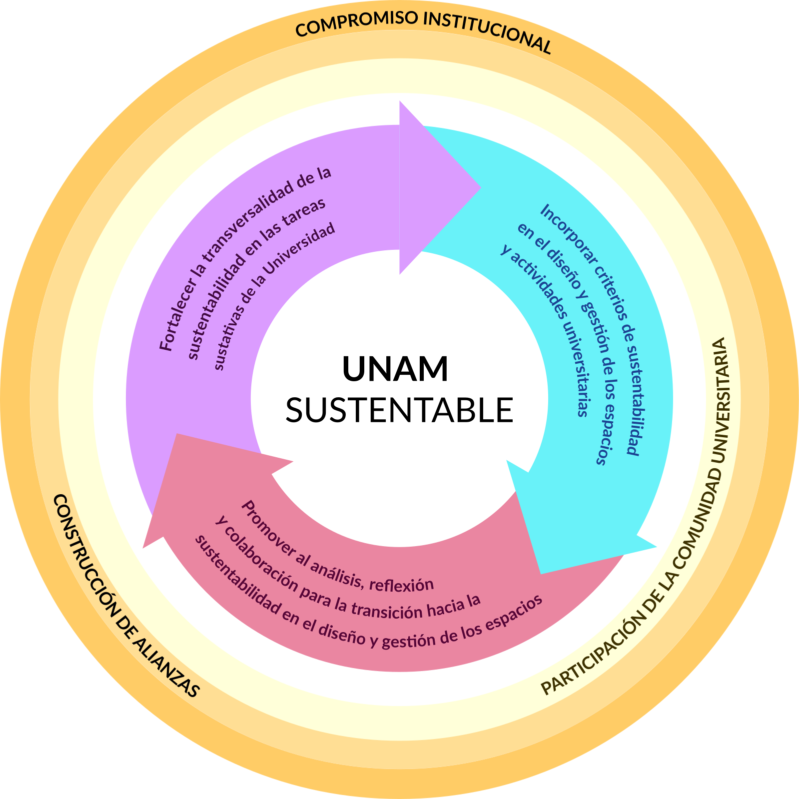

Programa de trabajo
Plan Integral para la Sustentabilidad
El Plan Integral para la Sustentabilidad (PISU) es el eje rector de nuestro
trabajo; el cual busca consolidar el liderazgo de la UNAM como una universidad
sustentable. El PISU es resultado de un esfuerzo de articulación y síntesis para
definir los principios, objetivos y estrategias de un modelo integral y
participativo que promueve la inclusión de la sustentabilidad en las tareas
sustantivas de la universidad y en la gestión de sus campus. Además, potencia la
participación de la comunidad universitaria en sus distintas iniciativas.
Con este Plan buscamos sentar las bases para la construcción de un proyecto
institucional de largo plazo, que sea marco de referencia para los esfuerzos que
impulsan las distintas dependencias y entidades de la Universidad.
Temas centrales y ejes transversales del Plan Integral para la
Sustentabilidad desde la UNAM:

Descargar documento
De manera complementaria, proponemos un conjunto de Programas, con metas de
mediano y corto plazos, para construir la sustentabilidad en cada una de las
áreas de trabajo de la UNAM: educación, investigación, extensión de la cultura,
gestión de los campus y vinculación e incidencia. Identificamos también tres
ejes transversales que respaldan la implementación del PISU:
1
El compromiso institucional de las autoridades
universitarias y del conjunto de las entidades y dependencias de la Universidad.
2
El desarrollo de alianzas y redes de colaboración dentro de la Universidad, con
otras universidades nacionales e internacionales, con actores gubernamentales,
sociales y privados
3
La participación de la comunidad universitaria en la
definición y desarrollo de las acciones y procesos identificados en los
distintos programas del PISU.
Programas
Tareas sustantivas
- Educación
- Investigación
- Extensión de la cultura
Gestión de los campus
- Áreas verdes
-
Movilidad
- Agua
- Energía
- Consumo
- Residuos
Ejes transversales
- Compromiso institucional, desarrollo de alianzas y redes de colaboración y
participación de la comunidad universitaria.
Promovemos que cada una de las entidades y dependencias de la UNAM
desarrollen sus planes estratégicos de sustentabilidad, a partir de sus
funciones, necesidades y características.
Hecho en México. Universidad Nacional Autónoma de México (UNAM). Todos los
derechos reservados 2022. Esta página puede ser reproducida con fines no
lucrativos, siempre y cuando se cite la fuente completa y su dirección
electrónica, y no se mutile; de otra forma requiere permiso previo por escrito
de la institución.
Promovemos que cada una de las entidades y dependencias de la UNAM
desarrollen sus planes estratégicos de sustentabilidad, a partir de sus
funciones, necesidades y características.